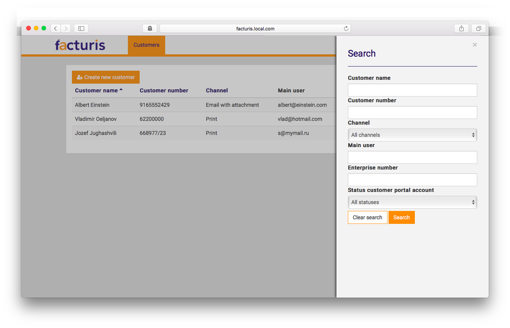

Skinny Controllers
in Rails
What About Filtering and Sorting?
Controller ???
authZ
HTTP ☞ app ☞ HTTP
 Disclaimer
Disclaimer
 Case study
Case study

class SubscriptionsController < ApplicationController
load_and_authorize_resource
check_authorization
helper_method :sort_direction, :sort_column
def index
if search_params.empty?
@subscriptions = @subscriptions.
order("#{sort_column} #{sort_direction}").
paginate(:page => params.fetch(:page, 1),
:per_page => params.fetch(:per_page, 10)).decorate
else
query, query_params = build_query
@subscriptions = @subscriptions.
where(query, query_params).
order("#{sort_column} #{sort_direction}").
paginate(:page => params.fetch(:page, 1),
:per_page => params.fetch(:per_page, 10)).decorate
end
end
def build_query
q = []
p = {}
if !search_params[:name].blank?
q << 'name ilike :name'
p[:name] = "%#{search_params[:name]}%"
end
# ...
if !search_params[:status].blank?
q << 'status = :status'
p[:status] = search_params[:status]
end
[q.join(' AND '), p]
end
# other actions
private
def search_params
p = params.permit(:name, :customer_number,
:preferred_channel, :email, :status)
p.delete_if { |k, v| v.blank? && v != false }
p
end
def sort_column
%w(name customer_number preferred_channel)
.include?(params[:sort]) ? params[:sort] : 'name'
end
def sort_direction
%w(asc desc).include?(params[:direction]) ? params[:direction] : 'asc'
end
# other private methods
end
fails the S in SOLID
repetition
hard to test
misunderstanding of ActiveRecord relations
hardcoded SQL
visibility of actions
magic numbers
double authorization checks
load_and_authorize_resource
check_authorization
sharing of the helper methods
helper_method :sort_direction, :sort_column
private
def sort_column
%w(name customer_number preferred_channel)
.include?(params[:sort]) ? params[:sort] : 'name'
end
def sort_direction
%w(asc desc).include?(params[:direction]) ? params[:direction] : 'asc'
end
def index
if search_params.empty?
@subscriptions = @subscriptions.
order("#{sort_column} #{sort_direction}").
paginate(:page => params.fetch(:page, 1),
:per_page => params.fetch(:per_page, 10)).decorate
else
query, query_params = build_query
@subscriptions = @subscriptions.
where(query, query_params).
order("#{sort_column} #{sort_direction}").
paginate(:page => params.fetch(:page, 1),
:per_page => params.fetch(:per_page, 10)).decorate
end
end
def search_params
p = params.permit(:name, :customer_number, :preferred_channel,
:email, :unique_enterprise_number, :status)
p.delete_if { |k, v| v.blank? && v != false }
p
end
def build_query
q = []
p = {}
if !search_params[:name].blank?
q << 'name ilike :name'
p[:name] = "%#{search_params[:name]}%"
end
# ...
if !search_params[:status].blank?
q << 'status = :status'
p[:status] = search_params[:status]
end
[q.join(' AND '), p]
end
Model
class Subscription < ActiveRecord::Base
# Insert domain logic here
end
enter scopes
scope(name, scope_options = {}), public
Adds a class method for retrieving and querying objects. A scope represents a narrowing of a database query […].
scope :preferred_channel, ->(preferred_channel) {
where(preferred_channel: preferred_channel)
}
scope :name, ->(name) {
where('name ILIKE ?', "%#{name}%")
}
scope :status, ->(status) {
where(status: status)
}
…
def for_params(params)
results = self.where(nil)
sort = params.delete(:sort)
direction = params.delete(:direction)
direction = 'ASC' unless direction == 'DESC'
results = results.reorder("#{sort} #{direction}") if sort
results = results.name(params[:name]) if params[:name].present?
results = results.status(params[:status]) if params[:status].present?
# repeat for all the filters
results
end
class Subscription < ActiveRecord::Base
default_scope { for_params(sort: 'customer_name') }
scope :customer_name, ->(customer_name) { ... }
scope :customer_number, ->(customer_number) { ... }
scope :preferred_channel, ->(preferred_channel) { ... }
scope :email, ->(email) { ... }
scope :unique_enterprise_number, ->(unique_enterprise_number) { ... }
scope :status, ->(status) { ... }
def for_params(params)
# ...
end
end
class SubscriptionsController < ApplicationController
load_and_authorize_resource
def index
@subscriptions = @subscriptions.for_params(index_params)
end
private
def index_params
params.permit(:name, :customer_number,
:preferred_channel, :email, :status,
:sort, :direction, :page, :per_page)
end
end